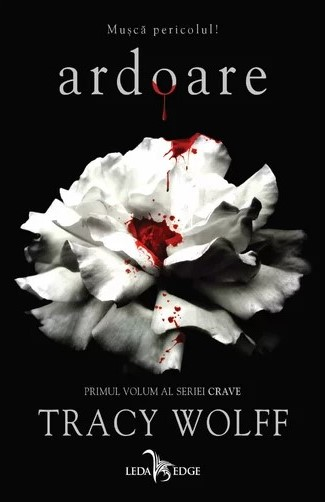

ARDOARE
Tracy Wolff
Lumea lui Grace se da peste cap de cum paseste pentru prima oara pe treptele exclusivistei academii Katmere. Nimic nu pare in regula cu locul sau cu... elevii. O simpla muritoare intre vampiri si dragoni, adolescenta nu se poate hotari de partea carei factiuni razboinice sa se plaseze. Singura certitudine pe care o are este ca toti ceilalti elevi o urasc de moarte. Mai putin Jaxon Vega, un vampir cu secrete periculoase care nu a mai simtit nimic pentru nimeni de mai bine de o suta de ani. Deloc bizar, Grace se simte atrasa de framantarile si traumele baiatului, care se potrivesc perfect cu propriile framantari si traume. Exista insa un motiv pentru care Jaxon si-a ferecat inima, iar acum cineva si-a propus sa destepte acest monstru adormit. Cu ce scop? Grace si-a propus sa afle si nu mica ii este mirarea cand descopera ca a fost adusa la Katmere intentionat, ca momeala.